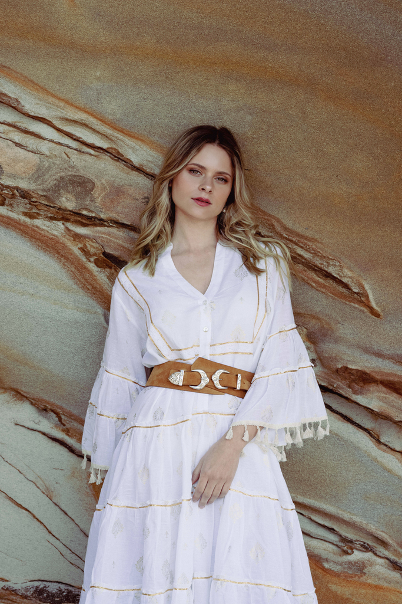
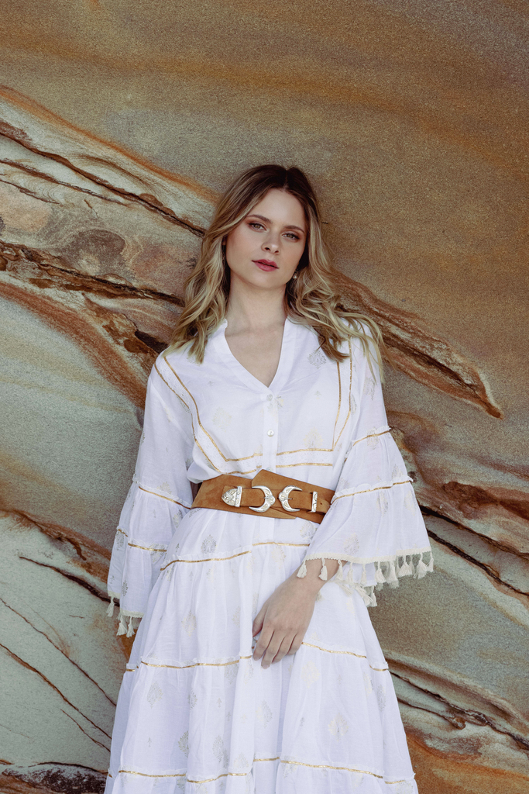

LOS GUÍAS
Hace más de 5 años que me conecto con la energía sagrada de los
guías, por medio de canalización de Registros Akáshicos, y muchas veces en sueños o
meditaciones. Ellos siempre están, los guías son energía disponible para todos. Y todos, todo el
tiempo están siendo atendidos por ellos, de alguna manera u otra. Hasta el menos creyente alguna
vez ha vivido algún milagro, en el que se ha preguntado qué o cómo ha pasado, y la verdad es que
siempre ha sido el guía que viene a este mundo con vos desde que encarnaste en este plano.
 
